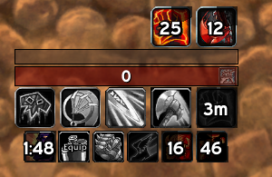

Warrior Playstyle
Warrior playstyle is plain and simple.
This list is priority order for rotation
- Keep Battle Shout up at all times !
- Bloodthirst on CD
- Whirlwind on CD. If 3-4 mobs use before BT
- Heroic Strikewhile above 60 rage
- Cleave when 2 mobs and >60 rage
Using Weakauras like this will help you with managing your CDs and rage.
